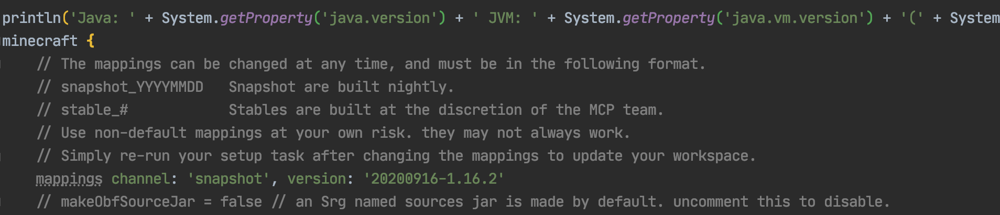
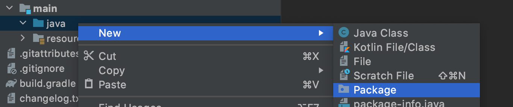
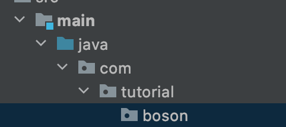
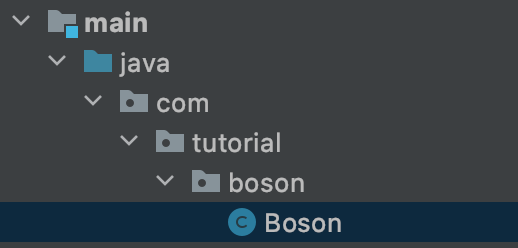
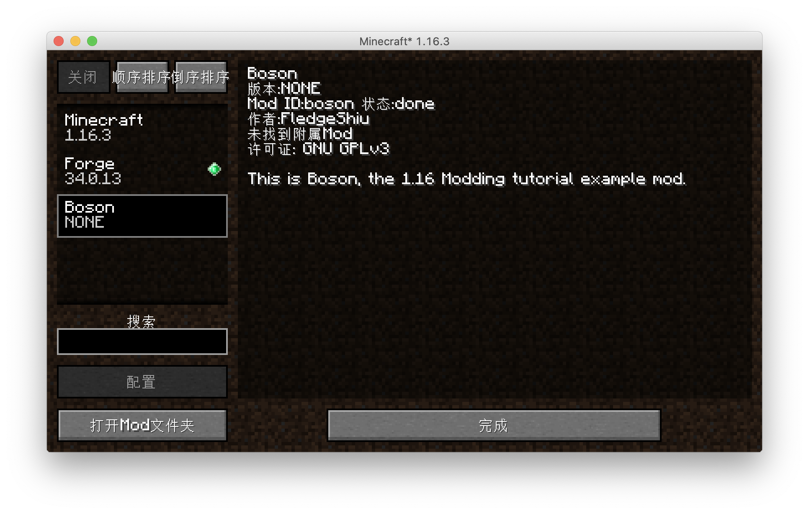

Customize Mod Info
From this section on we'll be officially writing our mod!
Updating Mappings
**Forge's Mapping system is in the process of migration, the content of the mapping file will be updated when the MMS system is released, the version we are currently using is 20200916-1.16.2 **
We need change mappings channel: 'snapshot', version: '20200514-1.16’ in build.gradle to mappings channel: 'snapshot', version: '20200916-1.16.2’。

Then click the re-import button in the right Gradle panel to re-import the project, because the build.gradle file is very important, please be careful not to correct it.

This process may involve downloading files (but not a lot), there is a chance of errors, check your build.gradle for errors, and try a few times.
gradle.build
You also need to change these lines in build.gradle
version = '1.0'
group = 'com.yourname.modid'
archivesBaseName = 'modid'
To:
version = '1.0'
group = 'com.github.fledgexu.boson'
archivesBaseName = 'Boson'
The first line shoul be your mode’s version. The second should be your mods group name, if you don’t know how to naming it, please read this.
The last, archivesBaseName, should the Jar name of Your mod. In there, i put the “Boson”.
Configuration
First we select all the directories and files in the java folder and then right-click to delete the default classes under the Java package.

Then right-click again to create a new package
By default your package name should be the backwards spelling of your domain name, because I don't want to use my own domain name as an example, so here I'm filling in com.tutorial.boson.



Right-click to create a Java class named Boson.

This Boson is the main class of our Mod.
Next, create a Utils class to hold some global constants.
The directory tree after creation is as follows.
java
└── com
└── tutorial
└── boson
├── Boson.java
└── Utils.java
Next let's go to the Utils class and define our modid, so what is your modId? modId is the unique identifier of your mod name, please note that modId and your mod name are not the same thing, it does not allow capital letters, nor spaces. The modId we've chosen here is boson.
public class Utils {
public static final String MOD_ID = "boson";
}
Then go to Boson and add a @Mod() comment to the top of the class name, add the modid we defined before. After that, we can add the following:
@Mod(Utils.MOD_ID)
public class Boson {
}
Next we need to modify mods.toml which is located under resources/META-INF. By default, IntelliJ does not syntactically highlight Toml files, so if you need syntax highlighting like I do, you can install the Toml plugin.
mods.toml is the configuration file for our mods, where we can modify the name, introduction, etc. of our mods. There are many configuration items, if a configuration item has #mandatory in the comment, it means it is required, if the injection is #optional, it means it is optional, you can add # in front of the configuration item to comment out the item.
Becasue the most readers of this verison of Boson are English speaker. You can understand comments. So just read the commnet to understand the function of configuration.
The rest are all dependencies, and Forge's official examples are clearly written, so we won't elaborate here.
The mods.toml I finished modifying is as follows:
modLoader="javafml"
loaderVersion="[34,)"
license="GNU GPLv3"
[[mods]]
modId="boson"
version="${file.jarVersion}"
displayName="Boson"
authors="FledgeShiu"
description='''
This is Boson, the 1.16 Modding tutorial example mod.
'''
Now that we've finished modding our mod info, let's open the game.

You can see that our Mod has appeared!